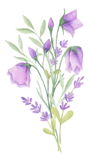
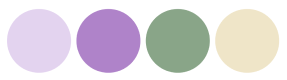

Vítejte
Zde najdete doplňující informace k naší svatbě. Pokud byste zde nenašli odpovědi, můžete nám samozřejmě zavolat.
Budeme se na vás moc těšit!
Doplňkové info
Vezměte si klidně věci na převlečení, kdyby vám bylo později v obleku moc horko, tak ať se můžete převléct.
Orientační program
- 11:30 příchod Vás, hostů
- 12:00 obřad
- 13:30 oběd
- Další program není pevně časově daný, ale můžete se těšit na krájení dortu, focení, svatební kvíz, první tanec a mnoho dalšího
Základní info
V sobotu 7. 6. 2025 se bude konat svatba Marka a Barči.Obřad bude probíhat od 12:00 v Roubence u rybníka ve Vratimově.
Sraz v 11:30. Na stejném místě bude také hostina a party.
Roubenka je v malebném údolí, kde telefonní signál skoro neznají. Data nebo telefonní signál je tak třeba hledat trochu dále od restaurace, nicméně WiFi je tam zajištěna. Věříme, že si však celý den užijete i offline ;)
Svatba bude laděna do světle fialové barvy, takže pokud chcete, můžete si pohrát s doplňky nebo outfity do naší barevné palety. Prosíme nevolte sytě červenou, oranžovou nebo čistě bílé šaty.
Pomozte nám s focením
Na celý obřad, první tanec a další důležité momenty máme profesionálního fotografa i kameramany, dejte jim tedy prosím prostor a u těchto momentů si užijte atmosféru bez telefonu v ruce.
Po obřadu, během rautu a zábavy však budeme rádi, pokud zachytíte okamžiky i na svůj telefon a podělíte se o ně s námi prostřednictvím zaslání na náš DISK níže.
K dispozici bude také foťák INSTAX, který dokáže fotku vytvořit přímo na místě. Využijte prosím tento foťák pro focení selfíček, ať máme co nejvíce fotek na památku a rovnou je nalepte do našeho alba.. Nebojte se toho, návod k použití bude přímo u foťáčku! :)
Ať už vás zaujme výzdoba, taneček svědka nebo se vám povedla momentka, hoďte nám ty nejlepší fotky do složky níže.
Nahrát vlastní fotkyDatum a místo
Zakroužkujte si 7. 6. 2025 v kalendáři!
Svatba se bude konat v Roubence u rybníka ve Vratimově. Od hlavní cesty to je několik set metrů kolem domků, tak se nelekněte, je to trochu z cesty, ale navedeme vás cedulkami.
Samotný obřad začne ve 12:00, proto prosím doražte raději s předstihem v 11:30. Místa pro parkování jsou k dispozici u příjezdové cesty.
Bude zde probíhat obřad, hostina i páárty :)
Ubytování a odvoz
Bohužel v Roubence ani blízkém okolí není možné ubytování. Rodině zdaleka bude ubytování zajištěno, pro ostatní je to snad v blízkém dojezdu jejich domovů.
Pro pařmeny doporučujeme, aby přijeli rovnou taxíkem, odvoz ze svatby zajistí náš svatební řidič.
Svatební dary
Jsme spolu už skoro 7 let a za tu dobu jsme (čti Bája) nastřádali spoustu materiálních věcí. Budeme tedy moc rádi, pokud nám přispějete do naší novomanželské kasičky peněžním darem.
Hlavně ale s sebou přineste spoustu energie a jen tu nejlepší náladu, to pro nás bude totiž nejdůležitější. :)